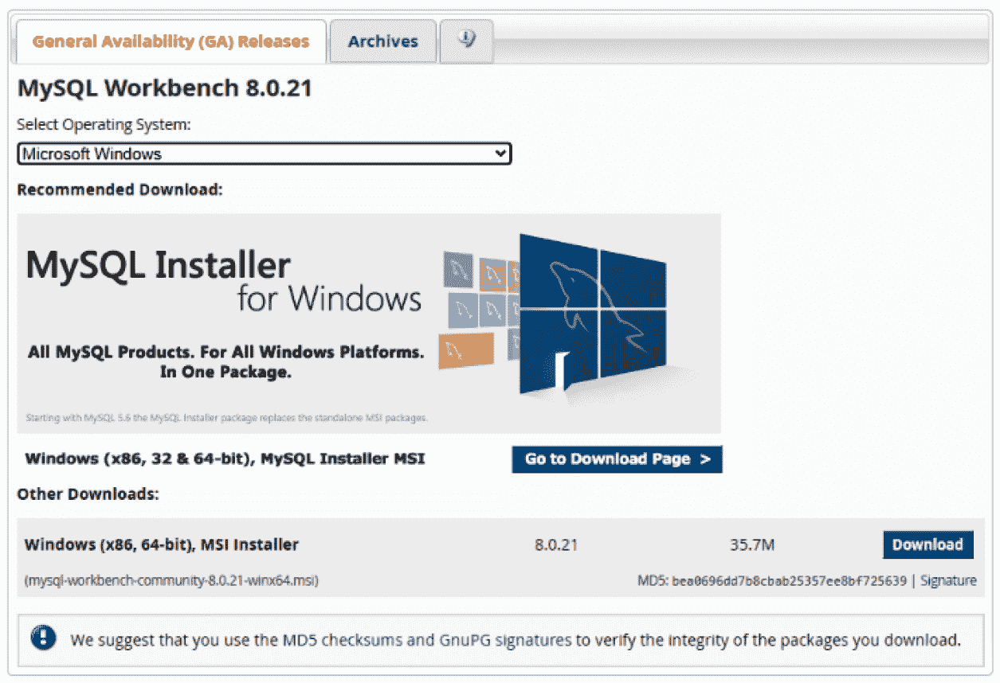
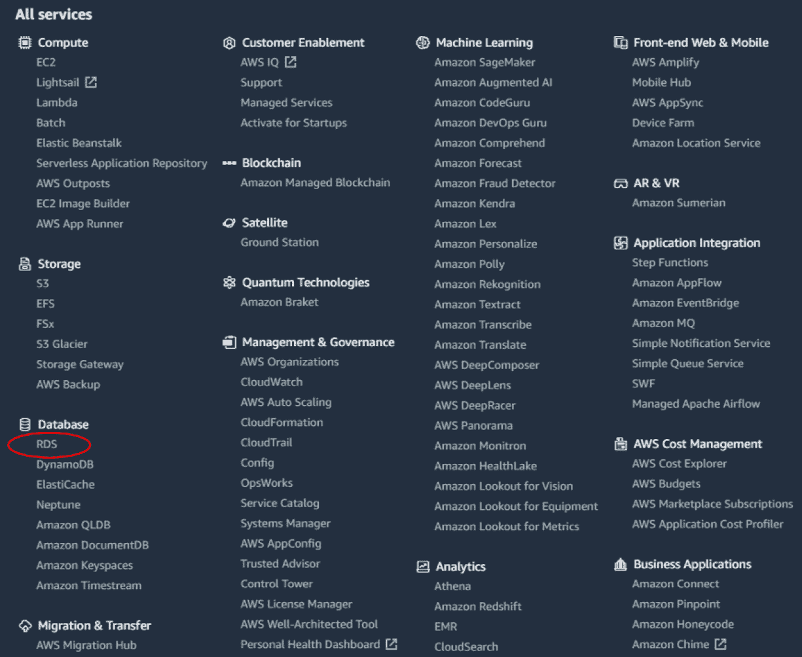
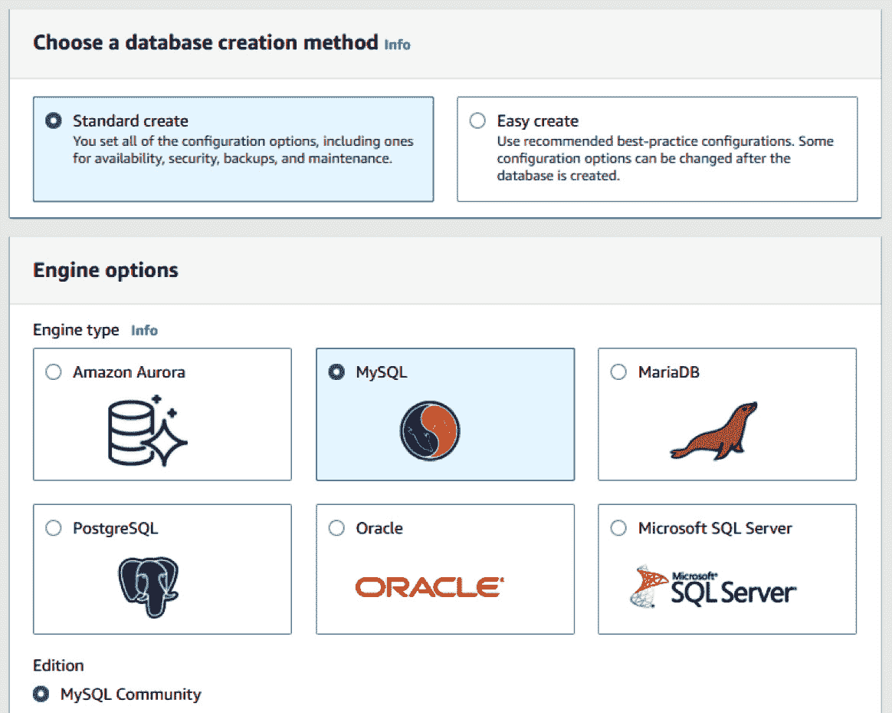
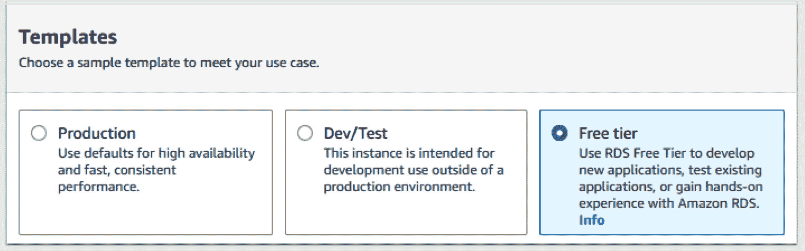
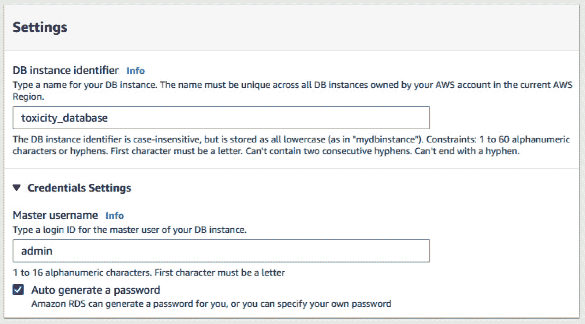
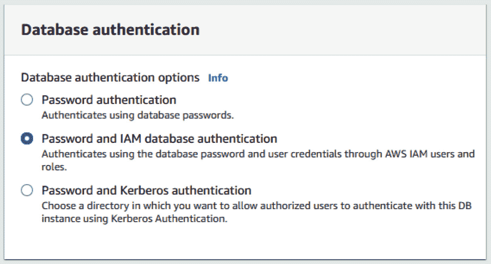
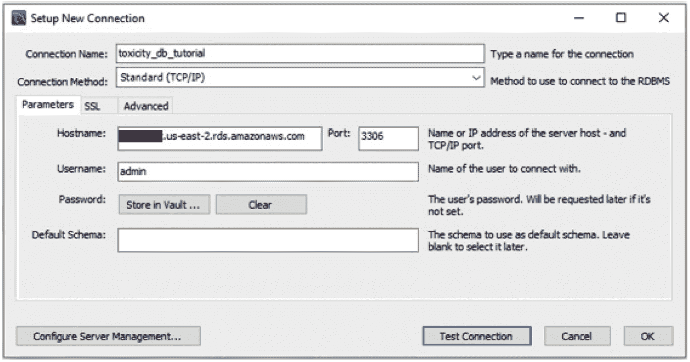
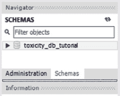

第3章:SQL和关系数据库入门
根据最近发表在大数据分析及其应用杂志上的一篇文章，在互联网上，每60秒就会发生以下情况:
- 进行了700，000次状态更新。
- 发送1100万条消息。
- 收到1.7亿封电子邮件。
- 创建了1820TB(TB)的新数据。
如果说商业领域的数据正以前所未有的速度快速增长，这是一种保守的说法。随着信息的大爆炸，全球各地的公司都在投入大量资金，努力有效地捕获、分析这些数据，并从中为公司带来好处。通过结构化查询语言 ( SQL )，可以管理数据并随后检索数据以提供可操作的见解。
类似于我们如何使用终端命令行来创建目录，或者使用Python来运行计算，您可以使用 SQL 来创建和管理本地计算机上或者远程云中的数据库。根据您选择使用的平台，SQL有多种形式和风格，每种形式和风格都包含稍微不同的语法。然而，SQL通常由四种主要类型的语言语句组成，这里对它们进行了概述:
- 数据操作语言 ( DML ):查询和编辑数据
- 数据定义语言 ( DDL ):查询和编辑数据库表格
- 数据控制语言 ( DCL ):创建角色和添加权限
- 事务控制语言 ( TCL ):管理数据库事务
谈到DDL、DCL和TCL，以及如何将数据库集成到他们的企业系统中，全球大多数公司都有自己的最佳实践。然而，DML通常是相同的，并且通常是任何给定数据科学家的主要关注点。出于这些目的，我们将把本章的重点放在与DML相关的应用上。在本章结束时，您将对一些最重要的数据库概念有一个很好的介绍，在您的本地机器上完全安装了MySQL Workbench，并部署了一个完整的 Amazon Web Services关系数据库服务 ( AWS RDS )服务器来托管和服务您的数据。请注意，所有这些能力都可以在以后为您自己的努力回收利用。我们开始吧！
我们将在本章中讨论以下主题:
- 探索关系数据库
- 教程:MySQL入门
技术要求
在这一章中，我们将探索关系数据库背后的一些主要概念、它们的好处以及它们的应用。我们将关注一个被称为MySQL的关系数据库的特殊风格。我们将通过其通用的用户界面 ( UI )使用 MySQL ，称为 MySQL Workbench 。无论您使用的是Mac还是PC，MySQL Workbench的安装过程都是非常相似的，我们将在本章的后面一起讨论这个问题。这个接口将允许您与一个数据库进行交互，这个数据库既可以托管在您的本地机器上，也可以远程托管在云中。在本章中，我们将在AWS云中部署和托管我们的数据库服务器，因此您需要有一个AWS帐户。你可以通过访问AWS网站(https://aws.amazon.com/)并注册成为新用户来创建一个账户。
探索关系数据库
有许多类型的数据库——比如面向对象的数据库、图形数据库和关系数据库——每一种都提供一种特殊的功能。
面向对象数据库最好与面向对象数据结合使用。这些数据库中的数据往往由包含字段、函数和属性等成员的对象组成；然而，对象之间的关系没有被很好地捕捉。
另一方面，图数据库顾名思义，最适合与由节点和边组成的数据一起使用。生物技术领域图形数据库最常见的应用之一是小分子药物设计。分子由以某种形式连接在一起的节点和边组成——这些关系最好在图形数据库中捕捉。然而，这里也没有很好地捕捉到分子之间的关系。
最后，关系数据库，顾名思义，最适合用于关系非常重要的数据库。关系数据库在生物技术和医疗保健领域最重要的应用之一是病人数据。由于患者数据的复杂性，关系数据库被用于患者数据。患者会有许多不同的字段，如姓名、地址、位置、年龄和性别。将为患者开出多种药物，每种药物包含其自己的子字段，例如批号、数量和有效期。每个批次都有生产地点、生产日期和相关的配料，每种配料都有各自的参数，等等。这种数据及其关联关系的复杂本质最好在关系数据库中捕获。
关系数据库是标准的数字数据库，以包含相互关系的列和行的形式来存放表。两个表之间的关系以唯一标识符 ( UID )或主键 ( PK )的形式存在。该键作为单个表中每一行的唯一值，允许用户将一个表中的行与另一个表中的相应行进行匹配。这些桌子在技术上没有任何联系；它们只是相互引用或关联。让我们看一个关于患者数据的简单例子。
如果我们要创建一个包含患者姓名、联系信息、他们的药房和处方医生的患者数据表，我们可能会得到一个类似如下的表:
图3.1–显示患者数据集示例的表格
从最初的角度来看，这张表非常有意义。我们在左边很好地列出了病人的信息，显示了他们的姓名、地址和电话号码。我们还有患者各自的初级保健医生 ( PCP )，显示他们相关的姓名、地址和电话号码。最后，我们还有患者各自的药房及其相关的联系信息。如果我们试图生成所有患者及其各自的PCP和药房的数据集，这将是使用的最佳表格。然而，在数据库中存储这些数据将是一个不同的故事。
请注意，一些PCP名称及其联系信息是重复的。类似地，一个药房出现不止一次，因为我们在同一个表中两次列出了它的名称、地址和电话号码。从三行表的角度来看，重复可以忽略不计。然而，当我们将这个表从3个患者扩展到30，000个患者时，从数据库角度(托管数据)和计算角度(检索数据)来看，重复的代价都非常高。
我们可以拥有多个表，而不是用一个表来存放我们所有的数据，当为了某个特定的目的(比如生成一个数据集)将多个表临时连接在一起时，从长远来看成本会大大降低。这种将数据分割或规范化成更小的表的想法是关系数据库的精髓。关系数据库的主要目的是提供一个方便有效的过程来存储和检索信息，同时尽可能减少重复。为了使这个数据库更加“关系化”,我们可以将数据分成三个表——药房、患者和PCP——这样我们只需要将每个条目存储一次，但是使用一个键系统来引用它们。
在这里，你可以看到一个统一建模语言 ( UML )图，通常用来描述关系数据库。由分成三部分的单线指示的表之间的连接是显示一对多关系的一种方式。在下面的例子中，一个药房可以有许多患者，一个PCP可以有许多患者，但是一个患者只能有一个PCP和一个药房。快速理解数据库设计并将其转化为UML图(反之亦然)的能力是使用数据库时需要具备的一项优秀技能，通常被认为是一个优秀的面试主题——几年前我确实收到过一个关于这个的问题:
图3.2–将一个较大的表规范化为较小的关系表的过程
上图展示了如何拆分原始表。注意，每个表都有一个ID；这个ID就是它的UID或者PK。使用外键 ( FK )引用与其他表相连的表。例如，一个PCP可以有多个患者，但每个患者只会有一个PCP；因此，每个患者条目都需要有其相关PCP的FK。很有趣，是吧？
以这种方式分离数据的过程被称为数据库规范化，大多数关系数据库必须遵守许多规则才能正确规范化。数据科学家通常不设计大型企业数据库(我们将这些任务留给数据库管理员)。然而，我们经常设计更小的概念验证数据库，遵循非常相似的标准。更常见的是，我们与大得多的企业数据库进行交互，这些数据库通常处于关系状态或数据湖的形式。在这两种情况下，对于任何数据科学家来说，关于关系数据库背后的结构和一般思想的坚实基础知识都是无价的。
数据库规范化
当准备一个规范化的数据库时，我们必须考虑一些规则，通常称为范式。我们将在关系数据库的上下文中简要讨论三种范式，如下所示:
第一范式
为了满足数据库规范化的第一范式 ( 1NF )，每个单元格中的值必须是原子的，即每个单元格只包含一种类型的数据。例如，包含地址(如波士顿第一街 5号，MA 02215 )的列包含非原子数据，这违反了此规则，因为它在一个单元格中包含街道号、街道名称、城市、州和邮政编码。我们可以将这些数据分成五列进行标准化，如下所示:
图3.3–显示如何将地址拆分成单个原子单元的表格
现在我们已经对第一种形式的数据规范化有了更好的理解，让我们继续探索第二种形式。
第二范式
为了满足第二范式 ( 2NF )的条件，表必须有一个 PK 作为UID，并且除PK之外的所有字段必须在功能上依赖于整个键。例如，我们可以有一个包含所有患者列表的表，在这种意义上，患者的名字、姓氏和电话号码都依赖于PK。这个键代表病人，不代表其他。我们还可以有另一个表来表示PCP、它们的位置、相关的医院等等。但是，从数据库规范化的角度来看，将这些信息添加到代表患者的表中是不合适的。
为了满足患者数据库的这一条件，我们需要拆分表，使患者数据在一个表中，相关的PCP在另一个表中，通过FK连接，如我们在前面的示例中所见。
第三范式
为了满足第三范式 ( 3NF )的条件，我们必须满足1NF和2NF的条件，此外还要确保表中的所有字段在功能上相互独立——换句话说，没有字段可以是计算字段。例如，具有27岁、32岁和65岁值的标题为年龄的字段在这里不合适，因为这些是计算的数量。相反，可以使用标题为出生日期以及相关日期的字段来满足该条件。
大多数数据科学家很少花时间构建主要的数据库并使它们规范化；然而，大量的时间花费在理解数据库结构和形成查询以正确有效地检索数据上。因此，对数据库有很强的基础理解总是有用的。
尽管数据库管理员和数据工程师倾向于花费更多的时间来构建和规范化数据库，但是当涉及到理解这些结构和开发有效的查询来正确有效地检索数据时，数据科学家却花费了大量的时间。因此，不管使用哪种类型的数据库，对数据库的深入基础理解总是有用的。
关系数据库的类型
根据商业数据库提供商的不同，您可能会遇到几种不同的风格的 SQL 。许多这样的数据库可以分为两大类:开放源码和企业级T21。开源数据库一般是免费的，允许学生、教育工作者和独立用户根据他们的具体条款和条件不受限制地使用他们的软件。另一方面，企业数据库在大公司中很常见。我们现在来看看大多数行业中最常见的一些数据库，包括技术、生物技术和医疗保健行业。
开放源码
以下列表显示了一些常见的开源数据库:
- SQLite :一种原子性、一致性、隔离性、持久性 ( ACID )、符合的关系数据库管理系统 ( RDBMS )，常用于较小的本地托管项目。SQLite 可以在Python语言中用来存储数据。
- MySQL :虽然不符合ACID，但MySQL 提供了与SQLite相似的功能，但规模更大，允许存储更大量的数据，并提供多用户访问。
- PostgreSQL :一个符合 ACID的数据库系统，提供更快的数据处理，更适合用户基数较大的数据库。
现在让我们探索一些企业选项。
企业
- AWS RDS :一种基于云的关系数据库服务，为存储、管理和检索数据提供可伸缩且经济高效的服务。
- 微软SQL Server :类似于MySQL Workbench的企业RDMS，使用云托管服务来存储和检索数据。
- 数据处理中的系统应用和产品 ( SAP ):用于存储和检索服务的RDBS 解决方案，通常用于库存和制造数据。
现在，让我们动手使用MySQL。
教程–MySQL入门
在下面的教程中，我们将探索启动基于云的服务器来托管私有关系数据库的最常见的过程之一。首先，我们将安装MySQL的一个实例——MySQL是最流行的数据库管理平台之一。然后我们将创建一个完整的自由层 AWS RDS服务器并将其连接到MySQL实例。最后，我们将上传关于小分子毒性及其相关属性的本地逗号分隔值 ( CSV )文件，并开始探索和学习从我们的数据集中查询我们的数据。
您可以在这里看到连接到MySQL实例的AWS RDS的表示:
图3.4–显示MySQL将连接到AWS RDS的图表
重要说明
请注意，虽然本教程涉及在此AWS RDS实例中为毒性数据集创建数据库，但您将能够为未来项目回收所有组件并创建多个新数据库，而无需重复本教程。我们开始吧！
安装MySQL工作台
在众多可用的数据库设计工具中，MySQL Workbench往往是最容易设计、实现和使用的。MySQL Workbench就是Oracle开发的一个虚拟数据库设计工具，它允许用户创建、设计、管理各种项目的数据库，并与数据库进行交互。或者，可以以MySQL Shell的形式使用MySQL，允许用户使用终端命令行与数据库进行交互。对于那些有兴趣从终端命令行工作的人来说，MySQL Shell可以通过导航到【https://dev.mysql.com/downloads/shell/】的并使用微软安装程序 ( MSI )来下载。然而，出于本教程的目的，我们将使用MySQL Workbench来代替它的用户友好界面。我们开始吧！进行如下操作:
- Getting MySQL Workbench installed on your local computer is fairly simple and easy to complete. Go ahead and navigate to https://dev.mysql.com/downloads/workbench/, select your respective operating system, and click Download, as illustrated in the following screenshot:
图3.5–MySQL安装程序页面
- 在下载文件后，点击安装。如果您有需要满足的特定标准，请完成安装步骤；否则，选择所有默认选项。确保允许MySQL选择标准目标文件夹，然后选择完整安装类型，如下图所示:
图3.6–MySQL安装程序页面(续)
至此，MySQL Workbench已经成功安装在您的本地机器上。我们现在将前往AWS网站，创建一个供我们使用的数据库的远程实例。请注意，我们将假设您已经创建了一个AWS帐户。
在AWS上创建MySQL实例
让我们创建一个MySQL实例，如下所示:
- Navigate to https://www.aws.amazon.com and log in to your AWS account. Once logged in, head to the AWS Management Console, and select RDS from the Database section, as illustrated in the following screenshot:
图3.7–AWS管理控制台页面
- From the top of the page, click the Create Database button. Select the Standard create option for the database creation method, and then select MySQL as the engine type, as illustrated in the following screenshot: 
图3.8–RDS引擎选项
- In the Templates section, you will have three different options: Production, Dev/Test, and Free tier. While you can certainly select the first two options if you are planning to use a production-level server, I would recommend selecting the third option, Free tier, in order to take advantage of it being free. The following screenshot shows this option being selected:
图3.9–RDS模板选项
- Under the
toxicitydatabasefor theadmin, followed by a password of your choice. You may also take advantage of the Auto generate a password feature that AWS provides. If you select this option, the password will be made available to you after the instance is created. The process is illustrated in the following screenshot:图3.10–RDS设置选项
- 在
db.t2.micro实例类型下。对于存储，选择默认参数，其中选择了存储类型为通用(SSD) 选项，并为服务器分配20GB(GB)的大小。请务必禁用自动缩放功能，因为我们将不需要此功能。 - Finally, when it comes to connectivity, select your default Virtual Private Cloud (VPC), followed by the default subnet. Be sure to change the Public Access setting to Yes as this will allow us to connect to the instance from our local MySQL installation. Next, ensure that the Password and IAM database authentication option in the Database authentication section is selected, as illustrated in the following screenshot. Next, click Create Database:
图3.11–RDS密码生成选项
- 一旦数据库创建过程开始，您将被重定向到RDS控制台，其中包含一个数据库列表，您将看到一个正在创建的
toxicitydataset数据库，如下图所示。请注意，数据库的状态栏将显示为待决片刻。同时，如果您请求AWS自动为您的数据库生成密码，您会在页面顶部的查看连接详细信息按钮中找到。请注意，出于安全原因，这些凭证将不会再向您透露。请务必打开这些详细信息，并将所有内容复制到安全的位置。通过本地MySQL接口连接到这个远程数据库将需要主用户名，主密码，以及指定的端点值。至此，我们已经创建了一个AWS RDS服务器，现在我们可以让AWS保持当前状态，将全部注意力转移到MySQL Workbench上:
图3.12–RDS菜单
准备好AWS基础设施后，让我们开始使用新创建的数据库。
使用MySQL
AWS上的设置完成后，继续打开MySQL Workbench。请注意，系统可能会提示您重新启动计算机。请遵循以下步骤:
- You should be greeted with a welcome message, followed by various options. To the right of the MySQL Connections section, click the + sign to add a new connection, as illustrated in the following screenshot:

图3.13–MySQL连接按钮
- In this menu, we will create a new database connection called
toxicity_db_tutorial. We will select theStandard (TCP/IP)connection method. Change the Hostname field to the endpoint that was provided to you in the connection details page in AWS. Next, add the username and password that was either specified or generated for you in AWS. Be sure to store your password in the vault to access it at a later time. Finally, click on the Test Connection button. The process is illustrated in the following screenshot. If all steps were correctly followed, you should receive a Successful connection response:图3.14–MySQL设置新连接菜单
- 在主菜单中，您应该看到新连接列在 MySQL连接部分下。双击新创建的连接，输入您的root计算机密码(如果没有保存在vault中)，然后单击 OK 。至此，我们已经创建了一个新的数据库连接，并使用MySQL Workbench连接到它。
- MySQL的文档非常广泛，因为它包含了大量的功能，几乎需要自己的书才能完全涵盖。出于本教程的目的，我们将重点关注数据科学领域最常用的功能子集。用户应该注意 MySQL Workbench 窗口中的三个主要部分—模式导航器、查询编辑器和T21输出窗口，如下图所示:
图3.15–MySQL工作台预览
模式导航器是允许用户在数据库之间导航的窗口部分。取决于你问的是谁，在什么样的上下文中，模式和数据库这两个词有时是同义词，可以互换使用。在本书的上下文中，我们将把模式定义为数据库的蓝图，将数据库定义为数据库本身。
查询编辑器是页面的部分，作为用户，您将在这里执行您的SQL脚本。在这个部分中，可以创建、更新、查询或删除数据。顾名思义，您可以使用输出窗口来显示您执行的查询的输出。如果一个查询出错或者发生了意想不到的事情，您可能会在这里找到一条关于它的重要消息。
创建数据库
在我们开始进行任何查询之前，我们需要一些数据来处理。让我们看看新服务器中现有的数据库。在查询编辑器中，输入SHOW DATABASES;，点击执行 ( )按钮。将向您提供系统上可用的数据库列表。这些数据库中的大多数要么是从以前的项目中创建的，要么是由您的系统管理数据。不管怎样，让我们避免使用它们。现在，请遵循以下步骤:
- 我们可以使用下面的SQL语句创建一个新的数据库:
CREATE DATABASE IF NOT EXISTS toxicity_db_tutorial;
- In the output window, you should see a message confirming the successful execution of this statement. Let's now go ahead and populate our database with a previously existing CSV file. Select the Schemas tab from the schema navigator and refresh the list using the icon with two circular arrows. You will see the newly created database appear in the list, as illustrated here: 
图3.16–MySQL模式列表
- 接下来，右击数据库上的，点击
dataset_toxicity_sd.csv。CSV文件。当提示选择目的地时，选择默认参数，允许MySQL在toxicity_db_tutorial数据库中创建一个名为dataset_toxicity_sd的新表。在导入配置设置中，允许MySQL为数据集选择默认数据类型。继续完成向导，直到导入过程完成。鉴于我们服务器的远程特性，传输文件可能需要一些时间。 - 一旦文件完全导入AWS RDS，我们现在就可以检查数据并开始运行一些SQL语句。如果单击模式导航器中的表，您将看到从CSV文件导入的所有列的列表，如下面的屏幕截图所示:
图3.17–毒性数据集中的列列表
仔细查看这些列，我们注意到我们从一个作为PK或UID的ID列开始，数据类型为int，代表integer。然后我们注意到一个叫做smiles的列，这是一个代表分子实际化学结构的文本或字符串。接下来我们有一栏叫做toxic，是化合物的毒性表示 1 为有毒，或者 0 为无毒。我们将把toxic列称为我们的FormalCharge到LogP是分子的属性或特征。我们将在下一章着手的主要目标之一是开发一个预测模型，使用这些特征作为输入数据，并尝试预测毒性。现在，我们将使用这个数据集来探索SQL及其最常见的子句和语句。
查询数据
我们将从一个简单的SELECT语句开始，在这个语句中，我们将从新创建的表中检索所有数据。我们可以在SELECT命令后使用*参数来表示特定表中的所有数据。表格本身可以在最后使用下面的语法指定:<database_name>.<table_name>:。
在实际命令中，它看起来像这样:
SELECT * from toxicity_db_tutorial.dataset_toxicity_sd;
这为我们提供了以下输出:
图3.18–MySQL工作台查询预览
我们很少在任何给定的查询中查询数据的所有列和行。通常情况下，我们会将列限制在感兴趣的列。我们可以通过用感兴趣的列列表替换*参数来实现这一点，如下所示:
SELECT ID, TPSA, MolWt, LogP, toxic from toxicity_db_tutorial.dataset_toxicity_sd;
注意列由逗号分隔，而语句中的其他参数没有。除了限制列数之外，我们还可以使用一个LIMIT子句，后跟我们想要检索的行数，来限制行数，如下所示:
SELECT ID, TPSA, MolWt, LogP, toxic from toxicity_db_tutorial.dataset_toxicity_sd LIMIT 10;
除了指定我们的列和行之外，我们还可以对列值应用操作，例如加、减、乘和除。我们还可以根据一组特定的条件来过滤我们的数据。例如，我们可以对数据库中所有有毒化合物(toxic=1)的ID和smiles列进行简单查询，如下所示:
SELECT ID, SMILES, toxic from toxicity_db_tutorial.dataset_toxicity_sd WHERE toxic=1;
类似地，我们也可以通过将语句的最后一行改为WHERE toxic = 0或WHERE toxic != 1来找到所有无毒的化合物。我们可以在一个WHERE子句中添加更多的条件来扩展这个查询。
条件查询
有条件的查询可以用来更有效地过滤数据，这取决于手边的用例。我们可以使用AND操作符来查询与特定毒性相关的数据，而AND操作符将确保两个条件都需要满足，如下面的代码片段所示:
SELECT ID, SMILES, toxic from toxicity_db_tutorial.dataset_toxicity_sd WHERE toxic=1 AND MolWt > 500;
或者，我们也可以使用OR操作符，其中任何一个条件都需要满足——例如，前面的查询要求数据的毒性值为1，摩尔重量为500，因此返回26行数据。在这里使用OR操作符需要或者满足其中一个条件，因此返回318行。运算符也可以相互结合使用。例如，如果我们想要查询具有1氢受体和1、2或3氢供体的所有分子的id、微笑表示和毒性，该怎么办？我们可以用下面的语句来完成这个查询:
SELECT ID, SMILES, toxic from toxicity_db_tutorial.dataset_toxicity_sd WHERE HAcceptors=1 AND (HDonors = 1 OR HDonors = 2 OR HDonors = 3);
值得注意的是，当以连续的顺序为值指定多个OR操作符时，例如三个HDonors值，可以使用BETWEEN操作符来避免不必要的重复。
分组数据
对数据库运行查询的另一个常见实践是按某一列对数据进行分组。让我们举一个例子，在这种情况下，我们必须检索我们的数据集中有毒和无毒化合物的实例总数。我们可以很容易地使用一个WHERE语句查询1或0的值出现的实例。然而，如果结果的数量是100而不是2呢？运行这个查询100次，在每次迭代中替换这个值是不可行的。对于这种类型的操作，或者任何值的分组非常重要的操作，我们可以结合使用GROUP BY语句和COUNT函数，如下面的代码片段所示:
SELECT ID, SMILES, COUNT(*) AS count from toxicity_db_tutorial.dataset_toxicity_sd GROUP BY toxic
如下图所示:
图3.19–MySQL工作台分组预览
既然我们已经探索了如何对数据进行分组，那么让我们继续学习如何对数据进行排序。
订购数据
在某些情况下，您的数据需要以某种方式排序，以升序或降序的方式。为此，您可以使用一个ORDER BY子句，在该子句中，排序列直接列在其后，后跟ASC表示升序，或DESC表示降序。下面的代码片段说明了这一点:
SELECT ID, SMILES, toxic, ROUND(MolWt, 2) AS roundedMolWt from toxicity_db_tutorial.dataset_toxicity_sd ORDER BY roundedMolWt DESC
连接表格
通常当查询记录时，如前所述，表将被规范化，以确保它们的数据以关系方式正确存储。通常情况下，在开始任何类型的有意义的JOIN子句将两个表连接在一起之前，您需要将两个表合并或连接在一起，以准备您感兴趣的数据集。
使用相同的dataset_orderQuantities_sd.csv数据集到相同的数据库中。回想一下，您可以在导入向导中指定相同的数据库名称，但不同的表名称。一旦加载完毕，我们现在将拥有一个由两个表组成的数据库:dataset_toxicity_sd和dataset_orderQuantities_sd。
如果我们在每个表上运行一个SELECT *语句，我们会注意到两个数据集唯一共有的列是ID列。这将作为连接两个数据集的UID。然而，我们还注意到毒性数据集由1461行组成，而orderQuantities数据集由728行组成。这意味着一个数据集缺少相当多的行。这就是不同类型的JOIN子句出现的地方。
将两个数据集想象为圆，表示为维恩图，其中一个圆( A )由1461行数据组成，一个圆( B )由728行数据组成。我们可以使用一个INNER JOIN函数来连接这些表，这样我们就可以丢弃任何不匹配的行。请注意，这在下面的截图中表示为两个圆的交点，或 A B 。或者，我们可以对我们的数据运行LEFT JOIN或RIGHT JOIN语句，忽略由A’B或AB’表示的数据集之一的不同内容。最后，我们可以使用一个OUTER JOIN语句来连接数据，合并两个表而不考虑丢失的行，称为union，或 A B :
图3.20–四种主要连接方法的示意图
当您开始探索数据集和连接表时，您会发现最常见的JOIN子句实际上是INNER JOIN语句，这是我们特定应用程序所需要的。我们将按如下方式构建语句:我们将选择感兴趣的列，指定源表，然后运行一个内部连接，将两个ID列匹配在一起。代码如下面的代码片段所示:
SELECT dataset_toxicity_sd.id, dataset_toxicity_sd.SMILES, dataset_orderQuantities_sd.quantity_g FROM toxicity_db_tutorial.dataset_toxicity_sd INNER JOIN toxicity_db_tutorial.dataset_orderQuantities_sd ON dataset_toxicity_sd.id = dataset_orderQuantities_sd.id
这样，我们成功地获得了我们的第一个数据集(仅由单个研发分子及其相关属性组成)，并将其与另一个表(由这些分子的订单数量组成)相结合，使我们能够确定我们目前有哪些物质库存。现在，如果我们需要找到所有具有特定亲脂性亲脂性 ( logP )的化合物，我们可以确定哪些化合物有库存，数量是多少。
总结
当从关系数据库中查询大量数据时，SQL是一种强大的语言——这种技能将在所有技术领域和大多数生物技术领域为您服务。随着大多数公司开始发展他们的数据库能力，您可能会遇到许多种类的数据库，尤其是关系数据库。
谈到理论，我们讨论了关系数据库的一些最重要的特征，以及数据通常是如何规范化的。我们看了一个病人数据的例子，以及一个表在存储时如何标准化以减少重复。我们还查看了当今市场上一些最常见的开源和企业数据库。
就应用程序而言，我们构建了一个强大的AWS RDS数据库服务器，并将其部署到云上。然后，我们将MySQL的本地实例连接到该服务器，并使用一个CSV文件用一个新数据库填充它。然后，我们回顾了当今业界使用的一些最常见的SQL语句和子句。我们研究了选择、过滤、分组和排序数据的方法。然后，我们看了一个将两个表连接在一起的例子，并理解了我们可以使用的不同连接方法。
虽然这本书旨在向您介绍每个数据科学家都应该知道的一些最重要的核心概念，但是SQL中还有许多其他主题我们没有涉及。我强烈建议您阅读MySQL文档，了解许多其他令人兴奋的语句，这些语句允许您查询许多不同形状和大小的数据。SQL将总是专门用于检索和查看表格形式的数据，但永远不会成为可视化数据的合适工具——这项任务最好留给Python及其许多可视化库，这将是下一章的重点。